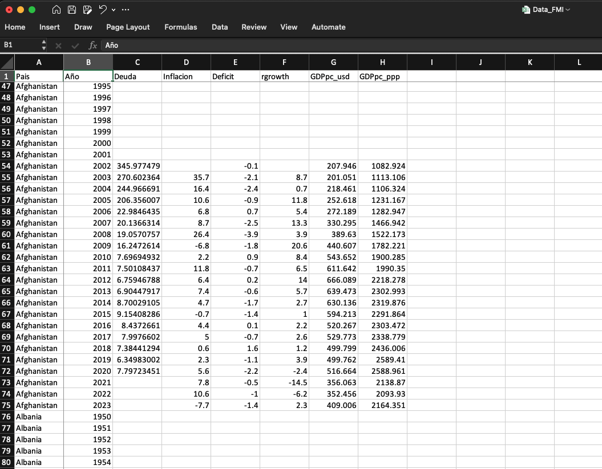

TidyverseTidyverse: una introducciónUno de los marcos para el análisis de datos más importantes del ecosistema de R es Tidyverse, que incluye una serie de paquetes diseñados para la manipulación y visualización de datos. En esta presentación, exploraremos cómo utilizar Tidyverse para realizar análisis de datos de manera eficiente y efectiva.
Tidyverse es un conjunto de paquetes o librerías de R diseñados para la ciencia de datos. Proporciona herramientas para todo el flujo de trabajo.
En este curso vamos a concentrarnos en readr para importar datos, dplyr para manipular datos, y ggplot2 para visualizarlos.
Una librería es un conjunto de funciones y datos que se pueden utilizar en R. Al ser un lenguaje de código abierto, R cuenta con una amplia variedad de librerías desarrolladas por la comunidad. Estas librerías se pueden instalar y cargar en el entorno de trabajo para utilizar sus funciones.
Para instalar una librería, se utiliza la función install.packages(). Por ejemplo, para instalar el paquete tidyverse, se puede ejecutar:
Nota
Es importante destacar que la instalación de paquetes es necesaria una sola vez. Una vez instalado, el paquete estará disponible para su uso en futuras sesiones de R. Por lo tanto, no es necesario volver a instalarlo cada vez que se inicie R.
Para utilizar las funciones de un paquete, es necesario cargarlo en el entorno de trabajo con la función library(), por ejemplo:
── Attaching core tidyverse packages ──────────────────────── tidyverse 2.0.0 ──
✔ dplyr 1.1.4 ✔ readr 2.1.5
✔ forcats 1.0.0 ✔ stringr 1.5.1
✔ ggplot2 3.5.2 ✔ tibble 3.2.1
✔ lubridate 1.9.4 ✔ tidyr 1.3.1
✔ purrr 1.0.4
── Conflicts ────────────────────────────────────────── tidyverse_conflicts() ──
✖ dplyr::filter() masks stats::filter()
✖ dplyr::lag() masks stats::lag()
ℹ Use the conflicted package (<http://conflicted.r-lib.org/>) to force all conflicts to become errorstidyverse carga varios paquetes, entre ellos dplyr en su versión 1.1.4 o forcats versión 1.0.0, etc.dplyr y stats tienen una función llamada filter(). En este caso, dplyr se carga por encima de stats. Si queremos utilizar la de stats, debemos especificar el paquete con stats::filter().Nota
Siempre es posible cargar un paquete específico sin cargar todo tidyverse utilizando la función library() con el nombre del paquete deseado, por ejemplo, library(dplyr). Esto es útil si solo necesitas funciones de un paquete específico para evitar el consumo de memoria y posibles conflictos con otras funciones de paquetes cargados.
readrEl primer paso en el análisis de datos es importar los datos a R y representarlos a través de un dataframe. El paquete readr proporciona funciones para leer datos de diferentes formatos, como .csv o .txt, entre otros.
El formato .csv es un formato de archivo plano que se utiliza comúnmente. Existen varias librerías en R que permiten leerlos. En este curso, utilizaremos la librería readr (al menos para .csv y .txt).
En la carpeta /Data se tiene un archivo llamado Data_FMI.xlsx que contiene datos económicos para varios países:

¿Cómo leer este archivo en R? Para ello, primero debemos cargar el paquete readr:
Luego, podemos leer el archivo .csv utilizando la función read_csv(). Antes de leerlo, debemos asegurarnos de que el archivo está en la carpeta correcta y se utiliza la ruta adecuada:
Rows: 15054 Columns: 10
── Column specification ────────────────────────────────────────────────────────
Delimiter: ","
chr (3): Pais, ISO_Code, Continent
dbl (7): Año, Deuda, Inflacion, Deficit_Fiscal, rgrowth, GDPpc_usd, GDPpc_ppp
ℹ Use `spec()` to retrieve the full column specification for this data.
ℹ Specify the column types or set `show_col_types = FALSE` to quiet this message.En este caso, la función me devuelve información sobre el archivo. Sin embargo, no podemos ver los datos directamente en la consola. Para ello, tenemos varias alternativas.
Las alternativas son:
data en la pestaña de Environment.View(data) para abrir una ventana de visualización de datoshead(data) para ver las primeras filas del dataframe en la consola o tail(data) para ver las últimas filas.Utilizando la 3ra opción, podemos ver las primeras filas del dataframe:
# A tibble: 6 × 10
Pais ISO_Code Continent Año Deuda Inflacion Deficit_Fiscal rgrowth
<chr> <chr> <chr> <dbl> <dbl> <dbl> <dbl> <dbl>
1 Afghanistan AFG Asia 1950 NA NA NA NA
2 Afghanistan AFG Asia 1951 NA NA NA NA
3 Afghanistan AFG Asia 1952 NA NA NA NA
4 Afghanistan AFG Asia 1953 NA NA NA NA
5 Afghanistan AFG Asia 1954 NA NA NA NA
6 Afghanistan AFG Asia 1955 NA NA NA NA
# ℹ 2 more variables: GDPpc_usd <dbl>, GDPpc_ppp <dbl># A tibble: 6 × 10
Pais ISO_Code Continent Año Deuda Inflacion Deficit_Fiscal rgrowth
<chr> <chr> <chr> <dbl> <dbl> <dbl> <dbl> <dbl>
1 Zimbabwe ZWE Africa 2025 NA 92.2 -0.5 6
2 Zimbabwe ZWE Africa 2026 NA 9.6 0.4 4.6
3 Zimbabwe ZWE Africa 2027 NA 8 0.9 3.6
4 Zimbabwe ZWE Africa 2028 NA 8 1 3.5
5 Zimbabwe ZWE Africa 2029 NA 8 1.1 3.5
6 Zimbabwe ZWE Africa 2030 NA 8 1.2 3.5
# ℹ 2 more variables: GDPpc_usd <dbl>, GDPpc_ppp <dbl>
Nota
Cuando se utilizaron las funciones head() o tail(), se imprimieron las primeras o últimas filas del dataframe pero, en lugar de decir “a data.frame: 6 x 10”, indicó “a tibble: 6 x 10”. tibble es una estructura casi idéntica a un dataframe. Para fines prácticos vamos a decir que es como un dataframe pero que imprime la información algo más ordenada. Para mayor detalle, escribir vignette(tibble) en la consola.
Otro tipo de archivos común son los archivos de Excel con extensión .xlsx. Para leer estos archivos, utilizamos el paquete readxl, que también forma parte del tidyverse, aunque no se carga automáticamente al cargar tidyverse.
Lo primero que se debe hacer es instalar el paquete readxl si no se ha hecho previamente:
En la carpeta /Data se tiene un archivo llamado Data_FMI.xlsx, igual que el anterior. Para leer este archivo, utilizamos la función read_excel() del paquete readxl:
Al igual que con los archivos .csv, podemos ver los datos utilizando las funciones View(), head() o tail():
# A tibble: 6 × 10
Pais ISO_Code Continent Año Deuda Inflacion Deficit_Fiscal rgrowth
<chr> <chr> <chr> <dbl> <dbl> <dbl> <dbl> <dbl>
1 Afghanistan AFG Asia 1950 NA NA NA NA
2 Afghanistan AFG Asia 1951 NA NA NA NA
3 Afghanistan AFG Asia 1952 NA NA NA NA
4 Afghanistan AFG Asia 1953 NA NA NA NA
5 Afghanistan AFG Asia 1954 NA NA NA NA
6 Afghanistan AFG Asia 1955 NA NA NA NA
# ℹ 2 more variables: GDPpc_usd <dbl>, GDPpc_ppp <dbl>
Nota
Nótese que se ha usado la notación readxl::read_excel() para especificar que estamos utilizando la función read_excel() del paquete readxl, aunque no era estrictamente necesario si ya se ha cargado el paquete con library(readxl).
dplyrLa manipulación de datos es un proceso clave en el análisis de datos. Consiste en preparar y transformar conjuntos de datos para realizar análisis efectivos. El paquete dplyr del ecosistema Tidyverse proporciona herramientas simples pero poderosas para lograr esto.
Esta sección es relativamente larga, pero quizás de las más importantes del curso.
El objetivo es aprender a manipular datos en R, de tal manera que nos sintamos cómodos navegando y transformando conjuntos de datos. Se estudiará:
| Función | Descripción breve |
|---|---|
filter() |
Filtra observaciones |
select() |
Seleccionar columnas |
mutate() |
Añadir o modificar variables |
arrange() |
Ordenar observaciones |
group_by() |
Agrupar observaciones |
summarise() |
Resumir datos por grupos |
Nota
En esta clase vamos a llamar observación a una fila individual dentro de un conjunto de datos y variable a una columna que representa una característica o atributo del conjunto de datos.
%>% o |> (pipe)El operador |> (Ctrl + Shift + M en Windows o Cmd + Shift + M en Mac) permite encadenar operaciones de manera más legible y eficiente. Este operador toma el resultado de una operación y lo pasa como primer argumento a la siguiente función:
Cuando se requieren muchos cálculos, mejora considerablemente la legibilidad del código y reduce la necesidad de variables intermedias. Por ejemplo:
# A tibble: 6 × 10
Pais ISO_Code Continent Año Deuda Inflacion Deficit_Fiscal rgrowth
<chr> <chr> <chr> <dbl> <dbl> <dbl> <dbl> <dbl>
1 Afghanistan AFG Asia 1950 NA NA NA NA
2 Afghanistan AFG Asia 1951 NA NA NA NA
3 Afghanistan AFG Asia 1952 NA NA NA NA
4 Afghanistan AFG Asia 1953 NA NA NA NA
5 Afghanistan AFG Asia 1954 NA NA NA NA
6 Afghanistan AFG Asia 1955 NA NA NA NA
# ℹ 2 more variables: GDPpc_usd <dbl>, GDPpc_ppp <dbl>filter()El verbo filter() se utiliza para seleccionar filas específicas de un dataframe según condiciones lógicas.
| País | Año | Valor |
|---|---|---|
| Bolivia | 2011 | 40.0 |
| Bolivia | 2012 | 44.0 |
| España | 2011 | 60.0 |
| España | 2012 | 35.0 |
| País | Año | Valor |
|---|---|---|
| Bolivia | 2012 | 44.0 |
| España | 2012 | 35.0 |
R?Como ya se ha visto antes, se pueden filtrar observaciones basadas en una o más condiciones. Por ejemplo, si se desea filtrar por el país “España” y el año 2012:
| País | Año | Valor |
|---|---|---|
| Bolivia | 2011 | 40.0 |
| Bolivia | 2012 | 44.0 |
| España | 2011 | 60.0 |
| España | 2012 | 35.0 |
| País | Año | Valor |
|---|---|---|
| España | 2012 | 35.0 |
R?filter()El verbo filter() permite utilizar varios operadores lógicos para filtrar datos. A continuación, se presentan los operadores más comunes que se pueden utilizar dentro de filter():
| Descripción | Operador | Ejemplo (dentro de filter()) |
|---|---|---|
| Mayor que | > |
filter(x > 10) |
| Mayor o igual que | >= |
filter(x >= 10) |
| Menor que | < |
filter(x < 10) |
| Menor o igual que | <= |
filter(x <= 10) |
| Igual a | == |
filter(x == 10) |
| Distinto de | != |
filter(x != 10) |
| Pertenencia | %in% |
filter(x %in% c(1, 2, 3)) |
| No pertenece | ! %in% |
filter(!(x %in% c(1, 2, 3))) |
| Es NA (faltante) | is.na() |
filter(is.na(x)) |
| No es NA | !is.na() |
filter(!is.na(x)) |
| Negación general | ! |
filter(!(x > 10)) |
| Y lógico | & |
filter(x > 10 & y < 5) |
| O lógico | | |
filter(x > 10 | y < 5) |
Ahora vamos a practicar el uso de filter() con algunos ejercicios, utilizando el dataset data que hemos importado anteriormente. En concreto:
data_23 que contenga solo las observaciones del año 2023.data_bolivia que contenga solo las observaciones de “Bolivia”.data_bol_2000 que contenga solo las observaciones de “Bolivia” del año 2000 en adelante.data_bol_deficit que contenga los datos de “Bolivia” donde el déficit fiscal sea mayor a 10%.data_bol que contenga las observaciones de “Bolivia” del año 1981 a 2023.El siguiente dataset se utilizará para los ejercicios:
# A tibble: 6 × 10
Pais ISO_Code Continent Año Deuda Inflacion Deficit_Fiscal rgrowth
<chr> <chr> <chr> <dbl> <dbl> <dbl> <dbl> <dbl>
1 Bolivia BOL Americas 2018 35.9 2.3 -8.2 4.2
2 Bolivia BOL Americas 2019 40.2 1.8 -7.2 2.2
3 Bolivia BOL Americas 2020 57.8 0.9 -12.7 -8.7
4 Bolivia BOL Americas 2021 62.7 0.7 -9.3 6.1
5 Bolivia BOL Americas 2022 65.4 1.7 -7.1 3.6
6 Bolivia BOL Americas 2023 73.8 2.6 -10.9 3.1
# ℹ 2 more variables: GDPpc_usd <dbl>, GDPpc_ppp <dbl>Recordar
De ahora en adelante para ilustrar la mayoría de los ejemplos, se utilizará el dataset data_bol que hemos definido anteriormente, el cual contiene las observaciones de “Bolivia” del año 1981 a 2023.
select()El verbo select() se utiliza para seleccionar columnas en un dataframe. Permite trabajar con un subconjunto de las columnas disponibles.
Por ejemplo, si se desea seleccionar las columnas Pais, Año y GDPpc_usd del dataset data_bol, se puede hacer de la siguiente manera:
# A tibble: 43 × 3
Pais Año GDPpc_usd
<chr> <dbl> <dbl>
1 Bolivia 1981 616.
2 Bolivia 1982 669.
3 Bolivia 1983 620.
4 Bolivia 1984 631.
5 Bolivia 1985 669.
6 Bolivia 1986 641.
7 Bolivia 1987 684.
8 Bolivia 1988 712.
9 Bolivia 1989 716.
10 Bolivia 1990 723.
# ℹ 33 more rowsEl verbo select() también permite seleccionar columnas por rango, por ejemplo, si se desea seleccionar las columnas de Año a Inflacion, se puede hacer de la siguiente manera:
También se pueden excluir columnas específicas utilizando el operador -. Por ejemplo, si se desea excluir la columna GDPpc_usd y ISO_Code, se puede hacer de la siguiente manera:
# A tibble: 43 × 8
Pais Continent Año Deuda Inflacion Deficit_Fiscal rgrowth GDPpc_ppp
<chr> <chr> <dbl> <dbl> <dbl> <dbl> <dbl> <dbl>
1 Bolivia Americas 1981 112. 32.1 -9.6 0.3 2465
2 Bolivia Americas 1982 144. 124. -15.9 -3.9 2463.
3 Bolivia Americas 1983 151. 276. -19.8 -4 2406.
4 Bolivia Americas 1984 160. 1281. -25.4 -0.2 2437.
5 Bolivia Americas 1985 192. 11750. -9.8 -1.7 2421.
6 Bolivia Americas 1986 140. 273. -2.7 -2.6 2357.
7 Bolivia Americas 1987 136. 14.6 -7.7 2.5 2424.
8 Bolivia Americas 1988 118. 16 -6.5 2.9 2530.
9 Bolivia Americas 1989 100. 15.2 -5.5 3.8 2673.
10 Bolivia Americas 1990 105. 17.1 -4.4 4.6 2842.
# ℹ 33 more rowsselect()select() también permite el uso de “helpers” para seleccionar columnas de manera más flexible. Algunos de los más comunes son:
| Helper | Descripción |
|---|---|
starts_with() |
Selecciona columnas que comienzan con un prefijo |
ends_with() |
Selecciona columnas que terminan con un sufijo |
contains() |
Selecciona columnas que contienen una cadena |
everything() |
Selecciona todas las columnas |
where() |
Selecciona columnas según una condición lógica |
Estos “helpers” también forman parte de dplyr y permiten una selección más dinámica de columnas.
Así, supongamos que se desea:
Año y todas las columnas que comienzan con “GDP”:# A tibble: 43 × 3
Año GDPpc_usd GDPpc_ppp
<dbl> <dbl> <dbl>
1 1981 616. 2465
2 1982 669. 2463.
3 1983 620. 2406.
4 1984 631. 2437.
5 1985 669. 2421.
6 1986 641. 2357.
7 1987 684. 2424.
8 1988 712. 2530.
9 1989 716. 2673.
10 1990 723. 2842.
# ℹ 33 more rows# A tibble: 43 × 3
Pais ISO_Code Continent
<chr> <chr> <chr>
1 Bolivia BOL Americas
2 Bolivia BOL Americas
3 Bolivia BOL Americas
4 Bolivia BOL Americas
5 Bolivia BOL Americas
6 Bolivia BOL Americas
7 Bolivia BOL Americas
8 Bolivia BOL Americas
9 Bolivia BOL Americas
10 Bolivia BOL Americas
# ℹ 33 more rowsmutate()Un verbo clave de dplyr es mutate(), que se utiliza para crear nuevas variables o modificar las existentes en un dataframe.
Por ejemplo, si se desea crear una nueva variable llamada GDPpc_milesUSD que sea el PIB per cápita en miles de dólares:
data_tmp <- data_bol |>
mutate(GDPpc_milesUSD = GDPpc_usd / 1000)
data_tmp |>
select(Pais, Año, GDPpc_usd, GDPpc_milesUSD)# A tibble: 43 × 4
Pais Año GDPpc_usd GDPpc_milesUSD
<chr> <dbl> <dbl> <dbl>
1 Bolivia 1981 616. 0.616
2 Bolivia 1982 669. 0.669
3 Bolivia 1983 620. 0.620
4 Bolivia 1984 631. 0.631
5 Bolivia 1985 669. 0.669
6 Bolivia 1986 641. 0.641
7 Bolivia 1987 684. 0.684
8 Bolivia 1988 712. 0.712
9 Bolivia 1989 716. 0.716
10 Bolivia 1990 723. 0.723
# ℹ 33 more rowsOtro uso común de mutate() es para crear variables de forma condicional. Es decir, que se tome un valor si se cumple una condición y otro valor si no se cumple. Para esto, se suele utilizar la función if_else, también parte de dplyr.
Por ejemplo, supongamos que se desea crear una nueva variable llamada cuentas_en que tome el valor de deficit si la variable Deficit_Fiscal es menor a 0 y superavit si es mayor o igual a 0:
data_tmp <- data_bol |>
mutate(cuentas_en = if_else(Deficit_Fiscal < 0, "deficit", "superavit"))
data_tmp |>
select(Pais, Año, Deficit_Fiscal, cuentas_en)# A tibble: 43 × 4
Pais Año Deficit_Fiscal cuentas_en
<chr> <dbl> <dbl> <chr>
1 Bolivia 1981 -9.6 deficit
2 Bolivia 1982 -15.9 deficit
3 Bolivia 1983 -19.8 deficit
4 Bolivia 1984 -25.4 deficit
5 Bolivia 1985 -9.8 deficit
6 Bolivia 1986 -2.7 deficit
7 Bolivia 1987 -7.7 deficit
8 Bolivia 1988 -6.5 deficit
9 Bolivia 1989 -5.5 deficit
10 Bolivia 1990 -4.4 deficit
# ℹ 33 more rowsFinalmente, muchas veces se quieren crear nuevas categorías en base a valores numéricos. Por ejemplo, si se desea crear una nueva variable llamada Inflacion_Categoria que tome el valor de baja si la inflación es menor a 5%, media si está entre 5% y 10%, y alta si es mayor a 10%:
data_tmp <- data_bol |>
mutate(Inflacion_Categoria = case_when(
Inflacion < 5 ~ "Baja",
Inflacion >= 5 & Inflacion < 10 ~ "Media",
Inflacion >= 10 & Inflacion < 50 ~ "Alta",
Inflacion >= 50 ~ "Muy alta"
))
data_tmp |>
select(Pais, Año, Inflacion, Inflacion_Categoria)# A tibble: 43 × 4
Pais Año Inflacion Inflacion_Categoria
<chr> <dbl> <dbl> <chr>
1 Bolivia 1981 32.1 Alta
2 Bolivia 1982 124. Muy alta
3 Bolivia 1983 276. Muy alta
4 Bolivia 1984 1281. Muy alta
5 Bolivia 1985 11750. Muy alta
6 Bolivia 1986 273. Muy alta
7 Bolivia 1987 14.6 Alta
8 Bolivia 1988 16 Alta
9 Bolivia 1989 15.2 Alta
10 Bolivia 1990 17.1 Alta
# ℹ 33 more rowspipeAnteriormente, se indicó que era posible utilizar el operador %>% o |> para encadenar operaciones. Esto es especialmente útil cuando se combinan varios verbos de dplyr.
Por ejemplo, en el caso anterior, se creó una nueva variable cuentas_en para indicar si el país tenía un déficit o superávit fiscal. El resultado fue un nuevo dataframe data_tmp que contenía la nueva variable. Sobre este se aplico el vebo select() para mostrar solo las columnas de interés.
Aunque funcionó, no es la manera más eficiente de hacerlo. En lugar de crear un dataframe intermedio, se puede encadenar las operaciones directamente utilizando el operador %>% o |>.
Por ejemplo, supongamos que se desea crear la variable cuentas_en y luego seleccionar las columnas Pais, Año, Deficit_Fiscal y cuentas_en en un solo paso:
data_bol |>
mutate(cuentas_en = if_else(Deficit_Fiscal < 0, "deficit", "superavit")) |>
select(Pais, Año, Deficit_Fiscal, cuentas_en)# A tibble: 43 × 4
Pais Año Deficit_Fiscal cuentas_en
<chr> <dbl> <dbl> <chr>
1 Bolivia 1981 -9.6 deficit
2 Bolivia 1982 -15.9 deficit
3 Bolivia 1983 -19.8 deficit
4 Bolivia 1984 -25.4 deficit
5 Bolivia 1985 -9.8 deficit
6 Bolivia 1986 -2.7 deficit
7 Bolivia 1987 -7.7 deficit
8 Bolivia 1988 -6.5 deficit
9 Bolivia 1989 -5.5 deficit
10 Bolivia 1990 -4.4 deficit
# ℹ 33 more rowsNótese que el encadenamiento de operaciones no tiene porqué quedar ahí. Supongamos que ahora solo queremos ver las observaciones donde cuentas_en es “superavit”. Podemos agregar otro verbo filter() al final de la cadena:
data_bol |>
mutate(cuentas_en = if_else(Deficit_Fiscal < 0, "deficit", "superavit")) |>
select(Pais, Año, Deficit_Fiscal, cuentas_en) |>
filter(cuentas_en == "superavit")# A tibble: 7 × 4
Pais Año Deficit_Fiscal cuentas_en
<chr> <dbl> <dbl> <chr>
1 Bolivia 2006 4.5 superavit
2 Bolivia 2008 3.5 superavit
3 Bolivia 2009 2.6 superavit
4 Bolivia 2010 1.6 superavit
5 Bolivia 2011 0.8 superavit
6 Bolivia 2012 1.7 superavit
7 Bolivia 2013 0.6 superavit Esto es lo que hace el ecosistema Tidyverse tan poderoso: la capacidad de combinar múltiples operaciones de manera fluida, legible y secuencial, tal como se haría en un flujo de trabajo natural.
Recordar
De ahora en adelante, vamos a utilizar el operador |> para encadenar operaciones de dplyr, aunque también se puede utilizar el operador %>%.
arrange()Otro verbo que suele ser muy útil es arrange(), que se utiliza para ordenar las observaciones de un dataframe según una o más variables. Por ejemplo,
# A tibble: 43 × 3
Pais Año Inflacion
<chr> <dbl> <dbl>
1 Bolivia 1985 11750.
2 Bolivia 1984 1281.
3 Bolivia 1983 276.
4 Bolivia 1986 273.
5 Bolivia 1982 124.
6 Bolivia 1981 32.1
7 Bolivia 1991 21.4
8 Bolivia 1990 17.1
9 Bolivia 1988 16
10 Bolivia 1989 15.2
# ℹ 33 more rows# A tibble: 43 × 3
Pais Año Inflacion
<chr> <dbl> <dbl>
1 Bolivia 2021 0.7
2 Bolivia 2002 0.9
3 Bolivia 2020 0.9
4 Bolivia 2001 1.6
5 Bolivia 2022 1.7
6 Bolivia 2019 1.8
7 Bolivia 1999 2.2
8 Bolivia 2018 2.3
9 Bolivia 2004 2.5
10 Bolivia 2010 2.5
# ℹ 33 more rowsgroup_by()Uno de los verbos más poderosos de dplyr es group_by(), que permite agrupar datos por una o más variables.
Para demostrar su uso, vamos a crear un nuevo conjunto de datos, tomando en cuenta algunos paises vecinos para los años 2022 y 2023:
data_vecinos <- data |>
filter(Pais %in% c("Bolivia", "Peru", "Chile", "Paraguay"),
Año %in% c(2022, 2023)) |>
select(Pais, Año, Inflacion)
data_vecinos # A tibble: 8 × 3
Pais Año Inflacion
<chr> <dbl> <dbl>
1 Bolivia 2022 1.7
2 Bolivia 2023 2.6
3 Chile 2022 11.6
4 Chile 2023 7.6
5 Paraguay 2022 9.8
6 Paraguay 2023 4.6
7 Peru 2022 7.9
8 Peru 2023 6.3Conceptualmente, ¿qué es lo que hace group_by()?
| Pais | Año | Inflacion |
|---|---|---|
| Bolivia | 2022 | 1.7 |
| Bolivia | 2023 | 2.6 |
| Chile | 2022 | 11.6 |
| Chile | 2023 | 7.6 |
| Paraguay | 2022 | 9.8 |
| Paraguay | 2023 | 4.6 |
| Peru | 2022 | 7.9 |
| Peru | 2023 | 6.3 |
group_by(): summarise()group_by() es especialmente útil cuando se combina con summarise(), que permite calcular estadísticas resumidas para cada grupo. Por ejemplo, si se desea calcular la inflación promedio por país.
summarise()summarise() no se limita a calcular promedios, sino que también permite calcular otras estadísticas como sumas, medianas, máximos, mínimos, etc. Por ejemplo:
Basado en el país, calcular el número de observaciones, la inflación promedio y la inflación máxima. Los resultados desplegarlos ordenando los países en orden alfabético, pero iniciando en la “Z”.
summarise()summarise() no se limita a calcular promedios, sino que también permite calcular otras estadísticas como sumas, medianas, máximos, mínimos, etc. Por ejemplo:
Basado en el país, calcular el número de observaciones, la inflación promedio y la inflación máxima. Los resultados desplegarlos ordenando los países en orden alfabético, pero iniciando en la “Z”.
summarise()summarise() no se limita a calcular promedios, sino que también permite calcular otras estadísticas como sumas, medianas, máximos, mínimos, etc. Por ejemplo:
Basado en el país, calcular el número de observaciones, la inflación promedio y la inflación máxima. Los resultados desplegarlos ordenando los países en orden alfabético, pero iniciando en la “Z”.
summarise()summarise() no se limita a calcular promedios, sino que también permite calcular otras estadísticas como sumas, medianas, máximos, mínimos, etc. Por ejemplo:
Basado en el país, calcular el número de observaciones, la inflación promedio y la inflación máxima. Los resultados desplegarlos ordenando los países en orden alfabético, pero iniciando en la “Z”.
summarise()summarise() no se limita a calcular promedios, sino que también permite calcular otras estadísticas como sumas, medianas, máximos, mínimos, etc. Por ejemplo:
Basado en el país, calcular el número de observaciones, la inflación promedio y la inflación máxima. Los resultados desplegarlos ordenando los países en orden alfabético, pero iniciando en la “Z”.
Nótese cómo, utilizando la sintaxis de dplyr es posible combinar múltiples operaciones de manera fluida y realizar la mayoría de las operaciones con pocas líneas de código.
Ahora vamos a practicar el uso de las distintos verbos de dplyr con algunos ejercicios, utilizando el dataset original, data, que hemos importado anteriormente. En particular, se pide responder:
En esta clase hemos aprendido a importar y manipular datos en R utilizando el ecosistema Tidyverse, específicamente los paquetes readr y dplyr. En particular, hemos visto cómo:
| Función | Descripción breve |
|---|---|
readr::read_csv() |
Importa archivos CSV |
readxl::read_excel() |
Importa archivos Excel |
filter() |
Filtra observaciones |
select() |
Selecciona o renombra columnas |
mutate() |
Añade o modifica variables |
arrange() |
Ordena observaciones |
group_by() |
Agrupa datos por variables |
summarise() |
Calcula estadísticas resumidas |
En la siguiente clase exploraremos visualizaciones con ggplot2, utilizando los datos transformados en esta sesión.
De todas maneras, para ver el potencial de esta herramienta, páginas como the The R Graph Gallery proveen algunos ejemplos e inspiración de gráficos que se pueden hacer con ggplot2.